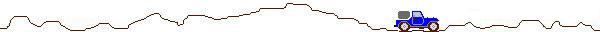

คำสั่ง AND |
คำสั่ง AND |
SYNTAX AND distination,source
การคำนวณเชิงตรรก AND
ตอนนี้เราสามารถพิมพ์เลขหลักบนเลขฐานสิบหกได้แล้วต่อไปเราจะพิมพ์เลขหลักที่สองแต่ก่อนอื่นเราจะศึกษาว่าจะทำการเคลียร์ค่าสี่บิตบนอย่างไรให้เป็นศูนย์โดยไม่ต้องเลื่อนบินเหมือนในตัวอย่างที่เล้วเราจะใช้คำสั่ง And ซึ่งเป็นการกระทำทางลอจิก (logic) เช่นถ้าเราพูดว่า A เป็นจริงถ้า B และ C เป็นจริงทั้งคู่ แต่ถ้า B หรือ C เป็นเท็จ A จะเป็นเท็จทันที โดยแทนค่า 1 ด้วยจริง (true) และค่า 0 ด้วยเท็จ (false) จะได้ค่า ตารางความจริงดังนี้
AND F T AND 0 1 F
F F 0
0 0 T
F T 1
0 1
จากตารางจะเห็นว่า AND จะให้ค่าเป็นจริงเพียงกรณีเดียวคือค่าที่ทำการ AND กันเป็นจริงทั้งคู่ (เป็น 1 ทั้งคู่) ในการ AND บิตกันนั้นเราใช้กับไบต์หรือเวิร์ดก็ได้ แต่ค่าที่จะนำมา AND กันต้องเป็นชนิดเดียวกัน เช่น ไบต์เหมือนกัน เป็นต้น เราจะทำการ AND กันโดยเขียนถลขทั้งสองให้อยู่ในเลขฐานสองและแต่ละบติที่อยู่หลักเดียวกันจะนำมา AND กัน
1 0 1 1 0 1 0 1 = B5h
AND 0 1 1 1 0 1 1 0 = 76h
-----------------------------------------------------
0 0 1 1 0 1 0 0 = 34h
คราวนี้ถ้าเรา AND 0Fh เข้ากับตัวเลขต่าง ๆ เราจะพบว่าสี่บิตบนถูกทำให้เป็น 0 และสี่บิตล่างจะมีค่าเหมือนเดิม
0 1 1 1 1 0 1 1 = 7Bh
AND 0 0 0 0 1 1 1 1 = 0Fh
-----------------------------------------------------
0 0 0 0 1 0 1 1 =0Bh
จำนวน clock ( 80286) 2-7, (80386) 2-7
แฟลกที่ถูกกระทำ : OF=0,CF=0,PF,SF,ZF
แฟลกที่ไม่ต้องกำหนด : AF
ข้อยกเว้นในโหมด protected : ยกเว้นในกรณีที่อยู่ในเซกเมนต์ที่เขียนข้อมูลไม่ได้ถ้าเป็นโอเปอร์แรนต์อยู่ในเซกเมนต์ CS,DS หรือ ES จะได้รับการยกเว้น แต่ถ้าเป็นเซกเมนต์ SS จะเกิดความผิดพลาดที่ stack ขึ้น
ข้อยกเว้นสำหรับโหมด real address : จะเกิด int 13 ขึ้น เมื่อโอเปอร์แรนด์อยู่ที่ออฟเซ็ต 0FFFH เราจะพัฒนาโปรแกรมพิมพ์เลขฐานสิบหกใหม่โดยใช้คำสั่ง AND แทนการหมุน ตัวอย่างโปรแกรม AND
โพรชิเยอร์นี้จะทำการตรวจสอบโพรชิเยอร์ WRITE_DECIMAL ว่าสามารถพิมพ์เลขฐานสิบ 12345 ได้หรือไม่
นอกจากนี้แล้ว เราต้องแก้ไขคำสั่ง END ที่ท้ายโปรแกรมใน VIDEO_IO.ASM จาก END TEST_WRITE_HEX เป็น END TEST_WRITE_DECIMAL เพราะโรชิเยอร์ REST_WRITE_DECIMAL เป็นโรชิเยอร์หลักตัวใหม่ของเรา
เราจะทำการคอมไพล์ลิงค์ และเปลี่ยนไฟล์คอม (COM) แล้วก็ทดลองรันโปรแกรมนี้ดูถ้าพบข้อผิดพลาดก็ลองใช้ดีบักตรวจดูการทำงานของโปรแกรมอีกที

ข้อมูลได้มาจากเอกสารประกอบการเรียน Assembly.